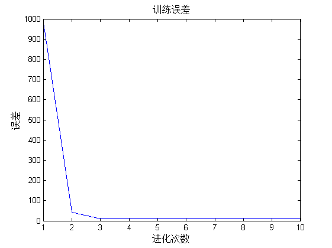

该代码为基于灰色神经网络的预测算法
| 该案例作者申明： |
| 1：本人长期驻扎在此板块里，对该案例提问，做到有问必答。本套书籍官方网站为：video.ourmatlab.com |
| 2：点此从当当预定本书：《Matlab神经网络30个案例分析》。 |
3：此案例有配套的教学视频，视频下载方式video.ourmatlab.com/vbuy.html。 |
| 4：此案例为原创案例，转载请注明出处（《Matlab神经网络30个案例分析》）。 |
| 5：若此案例碰巧与您的研究有关联，我们欢迎您提意见，要求等，我们考虑后可以加在案例里。 |
Contents
清空环境变量
clc
clear
load data
数据累加作为网络输入
[n,m]=size(X); for i=1:n y(i,1)=sum(X(1:i,1)); y(i,2)=sum(X(1:i,2)); y(i,3)=sum(X(1:i,3)); y(i,4)=sum(X(1:i,4)); y(i,5)=sum(X(1:i,5)); y(i,6)=sum(X(1:i,6)); end
网络参数初始化
a=0.3+rand(1)/4; b1=0.3+rand(1)/4; b2=0.3+rand(1)/4; b3=0.3+rand(1)/4; b4=0.3+rand(1)/4; b5=0.3+rand(1)/4;
学习速率初始化
u1=0.0015; u2=0.0015; u3=0.0015; u4=0.0015; u5=0.0015;
权值阀值初始化
t=1; w11=a; w21=-y(1,1); w22=2*b1/a; w23=2*b2/a; w24=2*b3/a; w25=2*b4/a; w26=2*b5/a; w31=1+exp(-a*t); w32=1+exp(-a*t); w33=1+exp(-a*t); w34=1+exp(-a*t); w35=1+exp(-a*t); w36=1+exp(-a*t); theta=(1+exp(-a*t))*(b1*y(1,2)/a+b2*y(1,3)/a+b3*y(1,4)/a+b4*y(1,5)/a+b5*y(1,6)/a-y(1,1)); kk=1;
循环迭代
for j=1:10 %循环迭代 E(j)=0; for i=1:30
网络输出计算
t=i;
LB_b=1/(1+exp(-w11*t)); %LB层输出
LC_c1=LB_b*w21; %LC层输出
LC_c2=y(i,2)*LB_b*w22; %LC层输出
LC_c3=y(i,3)*LB_b*w23; %LC层输出
LC_c4=y(i,4)*LB_b*w24; %LC层输出
LC_c5=y(i,5)*LB_b*w25; %LC层输出
LC_c6=y(i,6)*LB_b*w26; %LC层输出
LD_d=w31*LC_c1+w32*LC_c2+w33*LC_c3+w34*LC_c4+w35*LC_c5+w36*LC_c6; %LD层输出
theta=(1+exp(-w11*t))*(w22*y(i,2)/2+w23*y(i,3)/2+w24*y(i,4)/2+w25*y(i,5)/2+w26*y(i,6)/2-y(1,1)); %阀值
ym=LD_d-theta; %网络输出值
yc(i)=ym;
权值修正
error=ym-y(i,1); %计算误差 E(j)=E(j)+abs(error); %误差求和 error1=error*(1+exp(-w11*t)); %计算误差 error2=error*(1+exp(-w11*t)); %计算误差 error3=error*(1+exp(-w11*t)); error4=error*(1+exp(-w11*t)); error5=error*(1+exp(-w11*t)); error6=error*(1+exp(-w11*t)); error7=(1/(1+exp(-w11*t)))*(1-1/(1+exp(-w11*t)))*(w21*error1+w22*error2+w23*error3+w24*error4+w25*error5+w26*error6); %修改权值 w22=w22-u1*error2*LB_b; w23=w23-u2*error3*LB_b; w24=w24-u3*error4*LB_b; w25=w25-u4*error5*LB_b; w26=w26-u5*error6*LB_b; w11=w11+a*t*error7;
end end %画误差随进化次数变化趋势 figure(1) plot(E) title('训练误差','fontsize',12); xlabel('进化次数','fontsize',12); ylabel('误差','fontsize',12); %print -dtiff -r600 28-3 %根据训出的灰色神经网络进行预测 for i=31:36 t=i; LB_b=1/(1+exp(-w11*t)); %LB层输出 LC_c1=LB_b*w21; %LC层输出 LC_c2=y(i,2)*LB_b*w22; %LC层输出 LC_c3=y(i,3)*LB_b*w23; %LC层输出 LC_c4=y(i,4)*LB_b*w24; %LC层输出 LC_c5=y(i,5)*LB_b*w25; LC_c6=y(i,6)*LB_b*w26; LD_d=w31*LC_c1+w32*LC_c2+w33*LC_c3+w34*LC_c4+w35*LC_c5+w36*LC_c6; %LD层输出 theta=(1+exp(-w11*t))*(w22*y(i,2)/2+w23*y(i,3)/2+w24*y(i,4)/2+w25*y(i,5)/2+w26*y(i,6)/2-y(1,1)); %阀值 ym=LD_d-theta; %网络输出值 yc(i)=ym; end yc=yc*100000; y(:,1)=y(:,1)*10000; %计算预测的每月需求量 for j=36:-1:2 ys(j)=(yc(j)-yc(j-1))/10; end figure(2) plot(ys(31:36),'-*'); hold on plot(X(31:36,1)*10000,'r:o'); legend('灰色神经网络','实际订单数') title('灰色系统预测','fontsize',12) xlabel('月份','fontsize',12) ylabel('销量','fontsize',12) web browser www.matlabsky.com

相关论坛： 《Matlab神经网络30个案例分析》官方网站：video.ourmatlab.com Matlab技术论坛：www.matlabsky.com Matlab函数百科：www.mfun.la Matlab中文论坛：www.ilovematlab.com |